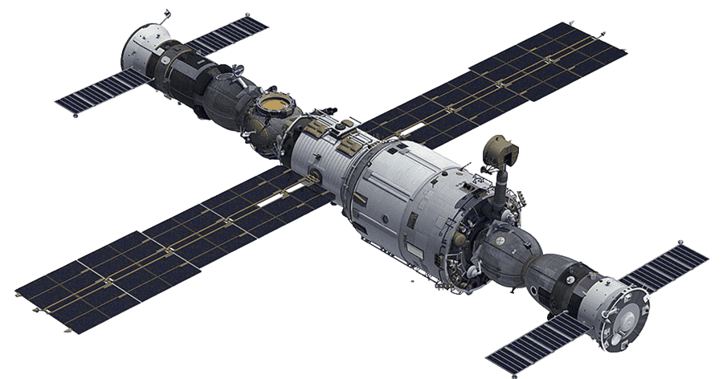

Сатурн має діаметр понад 120 тисяч кілометрів, але густина планети дуже мала — навіть менша, ніж у води. Якби існувало достатньо велике озеро, Сатурн зміг би плавати в ньому. Це пояснюється тим, що планета складається в основному з водню й гелію, а тверде або рідке ядро глибоко всередині займало б лише малу частину її об’єму.
Планета має величезну кількість супутників — понад 140, залежно від способу підрахунку. Найбільш відомий серед них Титан. Це найбільший супутник Сатурна і другий за розміром у Сонячній системі. Титан має щільну атмосферу з азоту, а на його поверхні існують озера та річки, проте не з води, а з рідкого метану й етану. Інший дивовижний супутник — Енцелад. Він викидає з-під поверхні гейзери водяного льоду, що свідчить про наявність підльодовикового океану, який може бути придатним для життя.
Сатурн — друга за величиною планета після Юпітера, ще один газовий гігант, відомий своїми кільцями. Жодна інша планета Сонячної системи не має настільки яскравих і широких кілець. Вони складаються переважно з льоду, кам’яних уламків і пилу. Деякі частинки можуть бути розміром з піщинку, інші — завбільшки з будівлю. Кільця простягаються на сотні тисяч кілометрів, хоча їхня реальна товщина — лише десятки метрів.